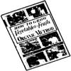

Water the cold frame daily after planting, using a fine can sprinkler and tepid water. One gallon sprinkling can to a 6-ft. section is generally adequate, and beds can be opened to a warm, light rain for added moisture when necessary.